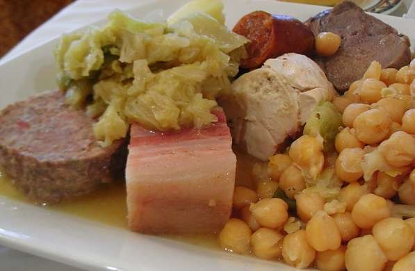
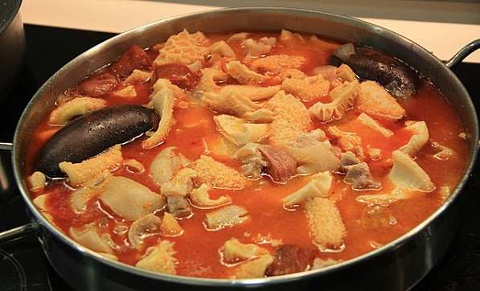
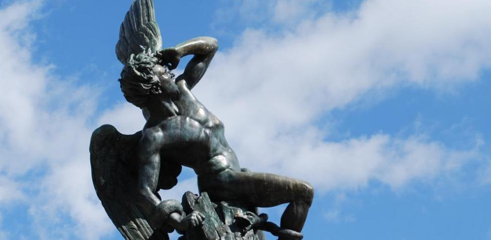

Se encuentra el Máximo campeon en La liga de Campeones (Champions League) con 14 titulos, más que cualquier otro club de Europa.
cocido madrileño  callos a la madrileña
Los callos a la madrileña junto con el cocido madrileño conforman 2 de los platos más históricos y típicos de Madrid. Los callos a la madrileña es un plato fuerte y muy difícil de introducirlo en paladares no iniciados.
Está compuesto por morro y tripas de ternera, los cuales hay que limpiar y desinfectar a conciencia, para posteriormente cocinarlos. Puedes encontrar este plato en casi cualquier restaurante de la ciudad.
El cantante lírico tenor y director de orquesta José Plácido Domingo Embil nació en Madrid. Es conocido por su voz versátil,
que posee un tono sonoro y claro a lo largo de toda su tesitura. Además de cantar, dirige orquestas, sobre todo ópera.
También ha actuado como director general de la Ópera Nacional de Washington en Washington, D.C. y en la Ópera de Los Ángeles, California.

La fuente del Ángel Caído o monumento del Ángel Caído se encuentra en el parque del Retiro de la villa de Madrid (España),
en la glorieta del Ángel Caído, sobre el solar que ocupaba la fábrica de Porcelanas de la China, destruida durante la Guerra de la Independencia en 1813.
Es obra de Ricardo Bellver (escultura principal) y Francisco Jareño (pedestal).